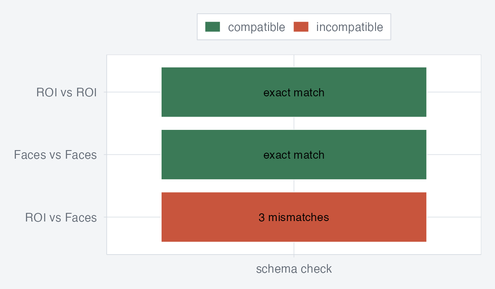

This vignette is a guided reading of the NFTab specification. The
full normative text lives in spec/nftab-spec.md in the
source repository; this document explains the same contract in package
terms and uses the shipped example datasets to make the main ideas
concrete.
If you want the end-to-end analysis workflow first, start with
vignette("neurotabs"). This article assumes you already
know how to read and query a dataset and focuses instead on what the
manifest contract means, how logical features stay separate from
storage, and why compatibility is schema-driven.
What Does The Spec Standardize?
NFTab standardizes a row-oriented neuroimaging dataset with three parts:
- a manifest that defines the logical contract
- an observation table that stores one row per observation
- an optional resource registry for externally stored feature data
The examples shipped with neurotabs show both the simple
and mixed cases. In this vignette, the goal is not to repeat the grammar
verbs. It is to compare raw manifest fragments with the parsed dataset
objects and inspect the contract they enforce.
roi_path <- system.file("examples/roi-only/nftab.yaml", package = "neurotabs")
faces_path <- system.file("examples/faces-demo/nftab.yaml", package = "neurotabs")
stopifnot(nzchar(roi_path), nzchar(faces_path))
roi_raw <- yaml::read_yaml(roi_path)
faces_raw <- yaml::read_yaml(faces_path)
roi_ds <- nf_read(roi_path)
faces_ds <- nf_read(faces_path)
list(
dataset_id = roi_raw$dataset_id,
storage_profile = roi_raw$storage_profile,
observation_axes = roi_raw$observation_axes,
features = names(roi_raw$features)
)
#> $dataset_id
#> [1] "roi-only"
#>
#> $storage_profile
#> [1] "table-package"
#>
#> $observation_axes
#> [1] "subject" "condition"
#>
#> $features
#> [1] "roi_beta"That output corresponds directly to the abstract data model in the spec: rows are observations, features resolve per row, and the manifest defines what those resolved values mean independent of physical storage.
What Does The Manifest Declare?
At the top level, a manifest declares dataset identity, storage profile, row identity, observation axes, scalar observation columns, and the feature set.
roi_raw[c(
"spec_version",
"dataset_id",
"storage_profile",
"row_id",
"observation_axes"
)]
#> $spec_version
#> [1] "0.1.0"
#>
#> $dataset_id
#> [1] "roi-only"
#>
#> $storage_profile
#> [1] "table-package"
#>
#> $row_id
#> [1] "row_id"
#>
#> $observation_axes
#> [1] "subject" "condition"The observation table location is part of the manifest too. In the
table-package storage profile, the table is a CSV, TSV, or
Parquet file that travels with the manifest.
roi_raw$observation_table
#> $path
#> [1] "observations.csv"
#>
#> $format
#> [1] "csv"What Is An Observation Table?
The observation table is the row-oriented part of the dataset. Each row is one observation, and scalar design metadata such as subject, group, condition, or age live directly in table columns.
utils::head(
roi_ds$observations[c("row_id", "subject", "group", "condition", "age")],
4
)
#> row_id subject group condition age
#> 1 r01 sub-01 control faces 25.3
#> 2 r02 sub-01 control houses 25.3
#> 3 r03 sub-02 control faces 31.7
#> 4 r04 sub-02 control houses 31.7Each observation column has a declared scalar schema. The spec uses that schema to define dtype, nullability, semantic role, levels, and optional units.
roi_raw$observation_columns$age
#> $dtype
#> [1] "float64"
#>
#> $nullable
#> [1] FALSE
#>
#> $semantic_role
#> [1] "covariate"
#>
#> $unit
#> [1] "years"When nf_read() loads the dataset, it coerces table
columns to those declared types and rejects incompatible values. The
getting-started vignette shows how you work with those columns
interactively; here the important point is that the schema is part of
the portable contract.
What Is A Feature Schema?
A feature is not just a storage column or file path. In NFTab, a feature has a logical schema that defines the kind of value produced when the feature is resolved for one row.
roi_schema <- nf_feature_schema(roi_ds, "roi_beta")
roi_schema
#> <nf_logical_schema> vector [5] float32
#> axes: roiFor the ROI example, roi_beta is a vector
with one semantic axis called roi, element dtype
float32, and logical shape 5. Resolving one
row produces that logical value.
roi_value <- nf_resolve(roi_ds, 1L, "roi_beta")
stopifnot(length(roi_value) == 5L)
roi_value
#> [1] 0.31 0.44 0.29 0.18 0.22This separation between logical schema and physical storage is the center of the spec. It is what lets two datasets remain compatible even when they use different physical layouts, as long as the resolved feature contract is the same.
How Do Encodings Work?
The spec allows a feature to have one or more encodings. An encoding says how a logical feature value can be materialized for one row.
The ROI example uses a columns encoding: the logical
vector is stored in an ordered bundle of scalar table columns.
roi_raw$features$roi_beta$encodings[[1]]
#> $type
#> [1] "columns"
#>
#> $binding
#> $binding$columns
#> [1] "roi_1" "roi_2" "roi_3" "roi_4" "roi_5"The mixed faces-demo uses a ref encoding
for a volume feature. Instead of putting voxel data in the observation
table, each row carries a resource identifier and an optional
selector.
faces_raw$features$statmap$encodings[[1]]
#> $type
#> [1] "ref"
#>
#> $binding
#> $binding$resource_id
#> $binding$resource_id$column
#> [1] "stat_res"
#>
#>
#> $binding$selector
#> $binding$selector$column
#> [1] "stat_sel"This is why the spec distinguishes between logical features and storage backends. The feature means “a 3D statistical map in MNI space”, while the encoding says how to find it for a particular row.
How Do Axis Domains Carry Atlas Metadata?
Axis domains are where the spec puts semantic metadata for a feature axis. For parcel-wise vectors, this is how you encode atlas identity and ROI labels.
roi_axis <- nf_axis_info(faces_ds, "roi_beta", "roi")
roi_labels <- nf_axis_labels(faces_ds, "roi_beta", "roi")
stopifnot(nrow(roi_labels) == 3L)
roi_axis
#> <nf_axis_domain>
#> id: desikan3-demo
#> labels: roi_labels.tsv
data.frame(
atlas = roi_axis$id,
label = roi_labels$label,
row.names = NULL
)
#> atlas label
#> 1 desikan3-demo left_fusiform
#> 2 desikan3-demo right_fusiform
#> 3 desikan3-demo left_parahippocampalThis matches the intended reading of the spec:
- the physical
binding.columnsorder defines storage order - the
roiaxis defines what those positions mean - the axis domain names the atlas and supplies the label table
How Do Sparse Masked Volumes Fit?
Some datasets do not store a dense 3D volume for each row. Instead,
they store only the values inside a fixed brain mask. In that case the
logical feature is better modeled as a vector over a voxel
axis, together with an extension that maps vector positions back to grid
coordinates.
masked_manifest <- nf_manifest(
dataset_id = "masked-demo",
row_id = "row_id",
observation_axes = c("subject", "condition"),
observation_columns = list(
row_id = nf_col_schema("string", nullable = FALSE),
subject = nf_col_schema("string", nullable = FALSE),
condition = nf_col_schema("string", nullable = FALSE),
v1 = nf_col_schema("float32"),
v2 = nf_col_schema("float32"),
v3 = nf_col_schema("float32")
),
features = list(
statvec = nf_feature(
logical = nf_logical_schema(
"vector",
"voxel",
"float32",
shape = 3L,
space = "MNI152NLin2009cAsym",
alignment = "same_grid"
),
encodings = list(nf_columns_encoding(c("v1", "v2", "v3")))
)
),
extensions = list(
"x-masked-volume" = list(
features = list(
statvec = list(
grid_axes = c("x", "y", "z"),
grid_shape = c(91L, 109L, 91L),
grid_index_base = 0L,
index_map = list(
path = "voxel_index.tsv",
format = "tsv"
)
)
)
)
)
)
masked_ds <- nftab(
masked_manifest,
observations = data.frame(
row_id = c("r1", "r2"),
subject = c("s01", "s02"),
condition = c("faces", "houses"),
v1 = c(0.1, 0.4),
v2 = c(0.2, 0.5),
v3 = c(0.3, 0.6),
stringsAsFactors = FALSE
)
)
nf_extension(masked_ds, "x-masked-volume")
#> $features
#> $features$statvec
#> $features$statvec$grid_axes
#> [1] "x" "y" "z"
#>
#> $features$statvec$grid_shape
#> [1] 91 109 91
#>
#> $features$statvec$grid_index_base
#> [1] 0
#>
#> $features$statvec$index_map
#> $features$statvec$index_map$path
#> [1] "voxel_index.tsv"
#>
#> $features$statvec$index_map$format
#> [1] "tsv"That extension says the feature is still stored as a vector, but the
manifest also supplies an external index map telling readers which
(x, y, z) voxel each vector position refers to. This is the
common case for masked group maps or sparse voxelwise features.
What Is The Resource Registry For?
A ref encoding can point directly to a backend and
locator, but many datasets use a resource registry so rows can refer to
shared resources by resource_id.
faces_raw$resources
#> $path
#> [1] "resources.csv"
#>
#> $format
#> [1] "csv"
faces_ds$resources
#> resource_id backend locator
#> 1 group4d nifti maps/group_stats.nii.gzThe spec requires that registry rows supply the storage metadata needed to materialize the referenced resource, such as backend name, locator, and optionally checksum.
What Does Conformance Mean?
The spec distinguishes between structural and full conformance.
- Structural conformance asks whether the manifest, table, and declared schemas form a well-typed NFTab dataset.
- Full conformance goes further and attempts to resolve every non-missing feature value.
For the ROI-only dataset, both levels pass because the feature values live in table columns and require no external backend.
structural <- nf_validate(roi_ds, level = "structural")
full <- nf_validate(roi_ds, level = "full")
stopifnot(structural$valid, full$valid)
data.frame(
level = c("structural", "full"),
valid = c(structural$valid, full$valid),
row.names = NULL
)
#> level valid
#> 1 structural TRUE
#> 2 full TRUEFor datasets with ref encodings, full conformance
additionally depends on backend support and resource integrity checks
such as checksum validation.
How Does Schema-Driven Compatibility Work?
The spec also defines when two datasets are compatible enough to concatenate. That decision depends on matching observation axes, compatible scalar columns, and identical logical feature schemas.
compat_roi <- nf_compatible(roi_ds, roi_ds)
compat_faces <- nf_compatible(faces_ds, faces_ds)
compat_cross <- nf_compatible(roi_ds, faces_ds)
compat_df <- data.frame(
comparison = c("ROI vs ROI", "Faces vs Faces", "ROI vs Faces"),
compatible = c(
compat_roi$compatible,
compat_faces$compatible,
compat_cross$compatible
),
mismatches = c(
length(compat_roi$reasons),
length(compat_faces$reasons),
length(compat_cross$reasons)
),
row.names = NULL
)
compat_df
#> comparison compatible mismatches
#> 1 ROI vs ROI TRUE 0
#> 2 Faces vs Faces TRUE 0
#> 3 ROI vs Faces FALSE 3
The compatible pairs pass because their observation axes, scalar schemas, and logical feature contracts line up exactly. The mixed pair fails for schema reasons, not because the files happen to live in different places.
compat_cross$reasons
#> [1] "observation_axes differ: [subject,condition] vs [subject,condition,run]"
#> [2] "feature name sets differ: {roi_beta} vs {roi_beta,statmap}"
#> [3] "feature 'roi_beta': logical schema mismatch"In other words, NFTab concatenation is schema-driven. It is not just row-binding two tables and hoping the feature values still mean the same thing.
How Should You Read The Full Spec?
The most important sections to understand first are:
- Abstract data model
- Observation table and scalar column schema
- Feature schema and logical schema
- Encodings and resource registry
- Resolution, conformance, and compatibility
If you keep those five layers in mind, the rest of the specification reads as a precise contract rather than a collection of disconnected fields.